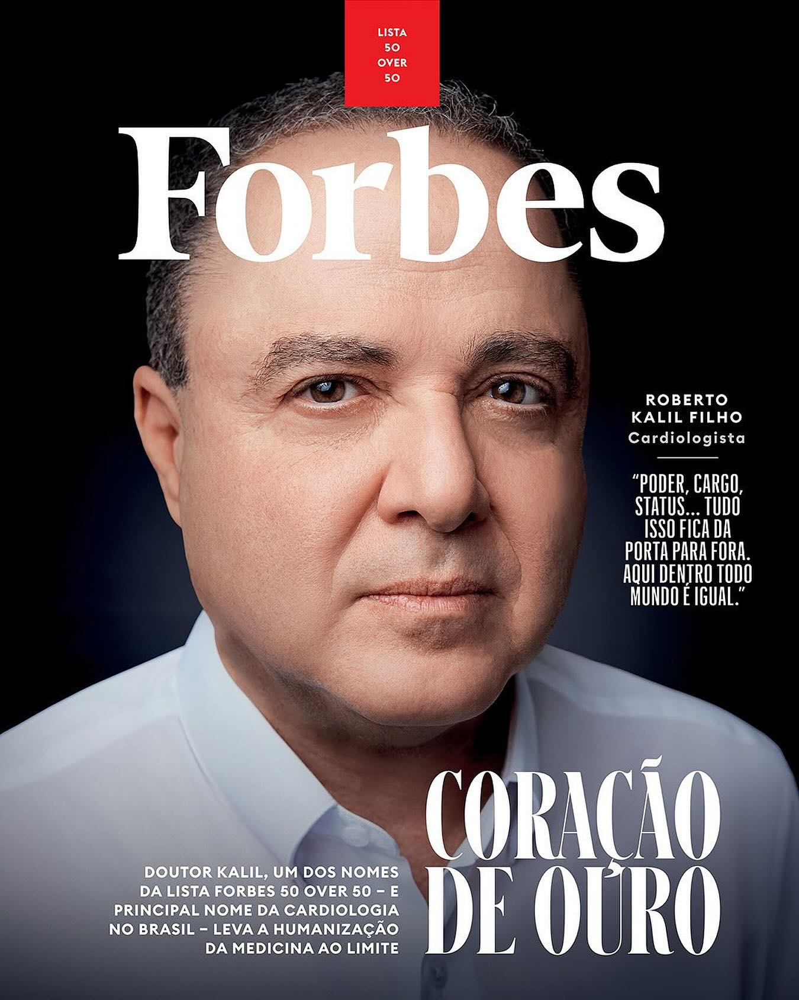
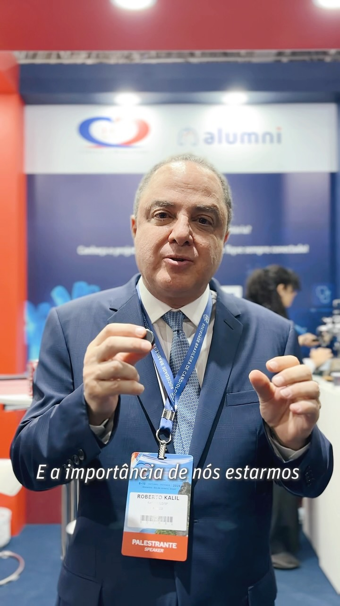
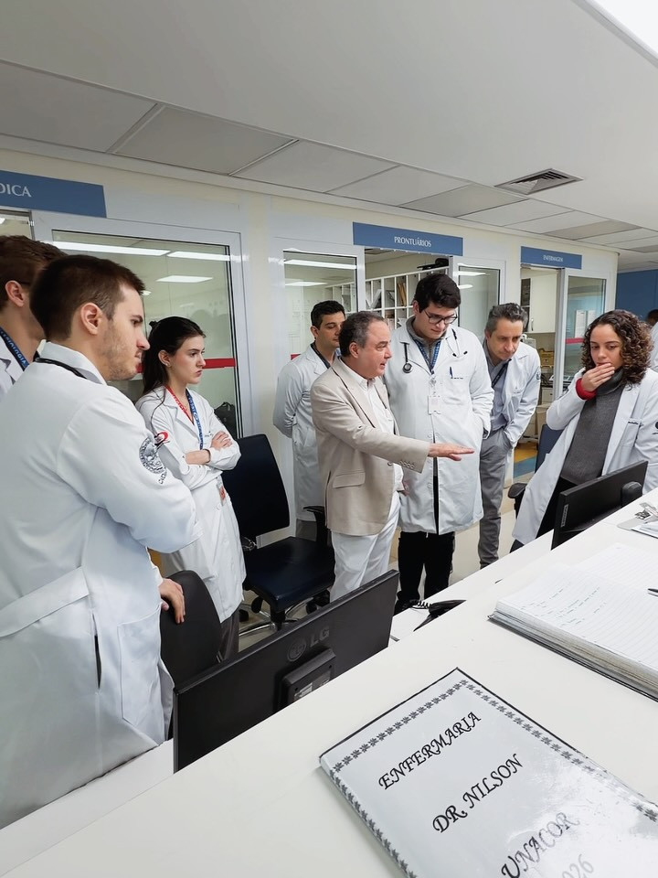

Conceito de redesign não oficial. Não é o site do Dr. Roberto Kalil Filho. Feito por @rafael.takehara como estudo de design.
Dr.Kalil
Cardiologista
Roberto Kalil Filho
Presidente do InCor · Professor titular da FMUSP · Diretor de Cardiologia do Sírio-Libanês
Consultas
(11) 3218-8202
Atendimento exclusivo em São Paulo
Ligar para agendar
Botão desativado neste conceito. Número divulgado pelo próprio Dr. Kalil no Instagram.
Cuidado com sites falsos. Em vídeo no Instagram, o Dr. Kalil avisa que consultas são marcadas só por telefone.
Na TV
CNN Sinais Vitais
CNN
Dr. Kalil Entrevista
Episódios anteriores
Todos os episódios no YouTube
Dúvidas
Tem uma dúvida sobre o coração?
No Dr. Kalil Responde, as perguntas mais comuns dos seguidores viram respostas.
Quem tem arritmia pode tomar vacina?
Reposição hormonal aumenta o risco de infarto?
Como prevenir antes dos sintomas?
Conteúdo informativo. Não substitui uma consulta.
Trajetória

Cadeira nº 1Academia Nacional de Medicina, 2026
InCorPresidente do Conselho Diretor
Sírio-LibanêsDiretor geral do Centro de Cardiologia
FMUSPProfessor titular de Cardiologia
Forbes 50 Over 50Capa, 2025
Para médicos

NovoAlumni InCorPara quem passou pela nossa história
LinkedInEnsino e pesquisaCongressos, residência e publicaçõesLeia e ouça